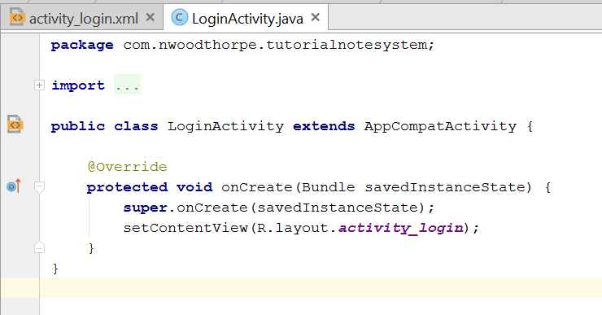
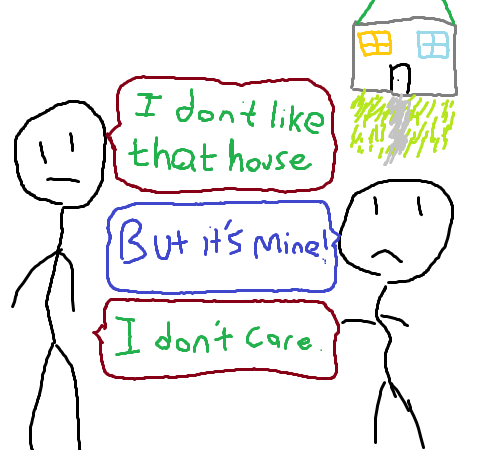
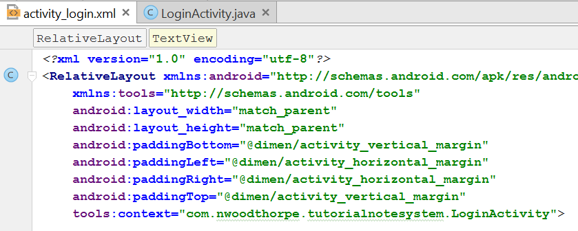

Android / Introduction to Android, Activities and XML
Introduction:
Now that we have the administrative stuff out of the way, we can get into Android dev. At first, Android can seem very overwhelming because if you're coming from Java, it's probably very different than anything you've ever worked with. Why are there already a billion files in your project? Why are we working in TWO different languages (XML is technically a markup), and what's the difference between Java and XML in Android? In this tutorial I'll answer all these questions, plus we'll analyze the generated Java code.
Two Languages?
In Android, we work with two main base languages: Java and XML. XML is for the front end design and templates. When you decide how you want your login page to be formatted, that's done in XML. Android Studio makes learning XML super easy because when you start typing, you'll find all the attribute options pop up in a nice sorted list for you!
Java is used for the app backend, which means everything happening under the hood in the background. When you click a button and want the app to confirm the username and password, that confirmation is done in Java. When you want to connect to a network or do anything dynamic that responds to user input, you're probably going to be using Java.
Before we dive into coding, let's take a quick look at the code Android Studio has generated for us.

The Java
Switch to the LoginActivity.java tab as shown above to see the generated code. Let's pick this apart and understand exactly what's happening here.
package com.nwoodthorpe.tutorialnotesystem;
This line defines our Java package, it works the same way as packages work in core Java. We don't have to worry about touching this.
import android.support.v7.app.AppCompatActivity;
import android.os.Bundle;
If you expand the '+' to the left of the import line, you'll see these two lines above. This is the list of the modules you're importing into your current file. Android Studio has a sweet auto-import feature which we'll see later, so we won't actually have to work with imports too much. If you ever need to do an import without Android Studio, they work the exact same way as they do in Java.
public class LoginActivity extends AppCompatActivity {
Now we are declaring our public class, which must always be named the same as our file name. Notice we are extending the AppCompatActivity class. This class handles a lot of the Android UI stuff including the ActionBar, which I'll explain in the XML section. If you've forgotten, we defined what an Activity is in the previous tutorial.
Overriding onCreate
@Override
protected void onCreate(Bundle savedInstanceState) {
super.onCreate(savedInstanceState);
setContentView(R.layout.activity_login);
}
First thing to notice with this segment is we're overriding the onCreate method from AppCompatActivity, which actually in turn overrides it from Activity. This function runs all the code needed to make your Activity open and be functional. By overriding it, we've said "I don't like your definition of this, I'm giving you a new one to use".

If you're unfamiliar with overriding methods, This might sound like a horrible idea! AppCompatActivity was written by Google, why would we be able to write a better version? Well all we have to do is include the line super.onCreate(Bundle savedInstanceState);, which really means "Do everything that AppCompatActivity's onCreate function does. So if you're lost, what we've done so far is we've rewritten the onCreate function and given it the exact functionality of the old one.
But now we can add more code after this! In essence, what we've done is allowed ourselves to add more code to the existing function that runs when the Activity is created. We don't have to remember how it all works, the important part is this: The onCreate function is overridden in every Activity to allow you to execute any Java code that must be run as soon (or before) the Activity is shown to the user. Your code must go AFTER the super.onCreate(Bundle savedInstanceState); line.
What the heck is R
setContentView(R.layout.activity_login);
This is the last important line in the Java code we've been given. This is the function that associates your XML front end with the Java backend. What it says is "This activity is going to look like the XML layout that R.layout.activity_login points to."
It's a bit odd for Google to define a class named R. It isn't descriptive, and it doesn't tell me anything about what it is, or what it does. R defines the resources for a project including constants, color hexes, images, layout files, and so on. To see everything that R provides, just type R with a dot after into Android Studio to see the menu. R.layout.activity_login is a pointer to our XML layout named activity_login.
This tutorial is getting a bit long, so I'll end it here. Next tutorial we'll explore the XML file and try to understand what the heck is going on with that. Spoiler alert: XML can be pretty confusing.
